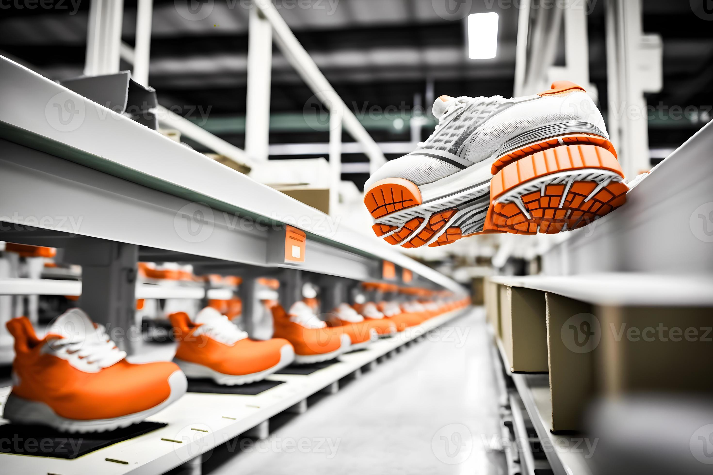
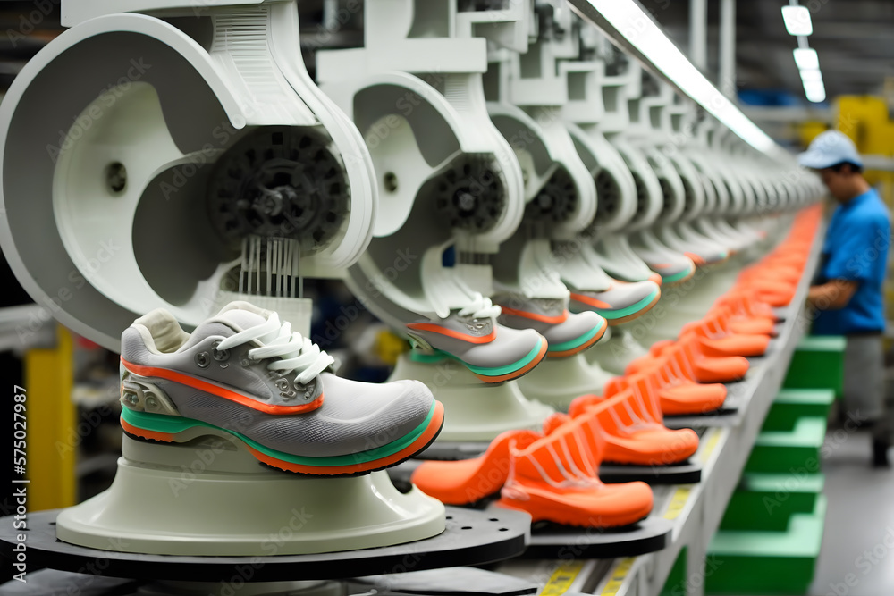

About Us
Kohinoor Shoes was established in 2019 with the vision of providing high-quality, fashionable footwear for all occasions. Our mission is to blend comfort with style, ensuring that every customer finds the perfect pair of shoes that meets their needs and exceeds their expectations.
 Over the years, we have grown from a small local store to a well-known brand, thanks to our dedication to quality and customer satisfaction. We pride ourselves on our extensive collection, which includes everything from casual sneakers to elegant formal shoes.
Our CEO, Sabiha Sultana, leads a dedicated team of 75 staff members who are committed to maintaining our high standards of quality and service. We have multiple locations around the country to serve our customers better.
Why is Kohinoor Shoes the best shoe provider? Our commitment to quality, comfort, and style sets us apart. We source the finest materials and employ skilled artisans to craft each pair of shoes with precision. Our customer-centric approach ensures that we cater to the unique needs of each individual, providing personalized recommendations and exceptional after-sales service. With a wide variety of designs and sizes, we guarantee that every customer will find their perfect fit.